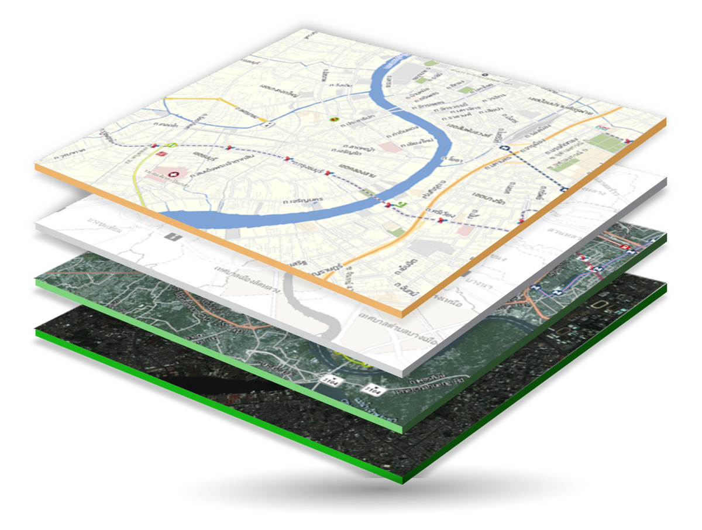
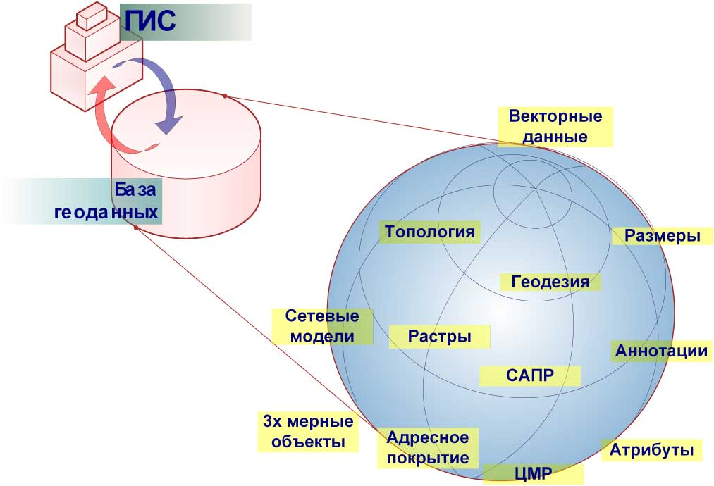
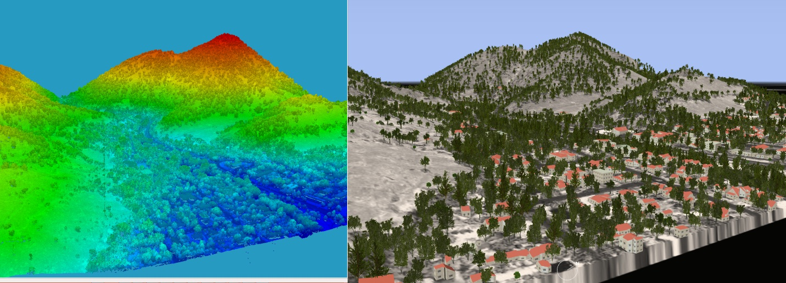

ГИС — это системы сбора, хранения, анализа и визуализации географических данных и связанной с ними информации о необходимых объектах.
Что такое ГИС?
Географическая информационная система (ГИС) — это система, предназначенная для сбора, хранения, обработки, анализа, управления и представления пространственно-координированных данных.

ГИС позволяет визуализировать данные на картах

Анализ пространственных данных помогает принимать решения

Современные ГИС поддерживают 3D-моделирование
Основные компоненты ГИС
- Аппаратное обеспечение — компьютеры, устройства ввода/вывода, GPS-оборудование
- Программное обеспечение — специализированные ГИС-приложения (ArcGIS, QGIS и др.)
- Данные — пространственные и атрибутивные данные о географических объектах
- Пользователи — специалисты, работающие с системой
- Методы — процедуры и технологии анализа данных
Области применения ГИС
Городское планирование
Анализ застройки территорий, планирование инфраструктуры, зонирование
Экология
Мониторинг состояния окружающей среды, анализ изменения ландшафтов
Транспорт
Планирование маршрутов, логистика, анализ транспортных потоков
Сельское хозяйство
Точное земледелие, мониторинг состояния посевов, планирование работ
Преимущества использования ГИС
- Улучшенное принятие решений на основе пространственного анализа
- Эффективное управление ресурсами и планирование
- Улучшенная коммуникация за счет наглядной визуализации данных
- Сохранение и систематизация географических данных
- Автоматизация процессов сбора и обработки пространственной информации